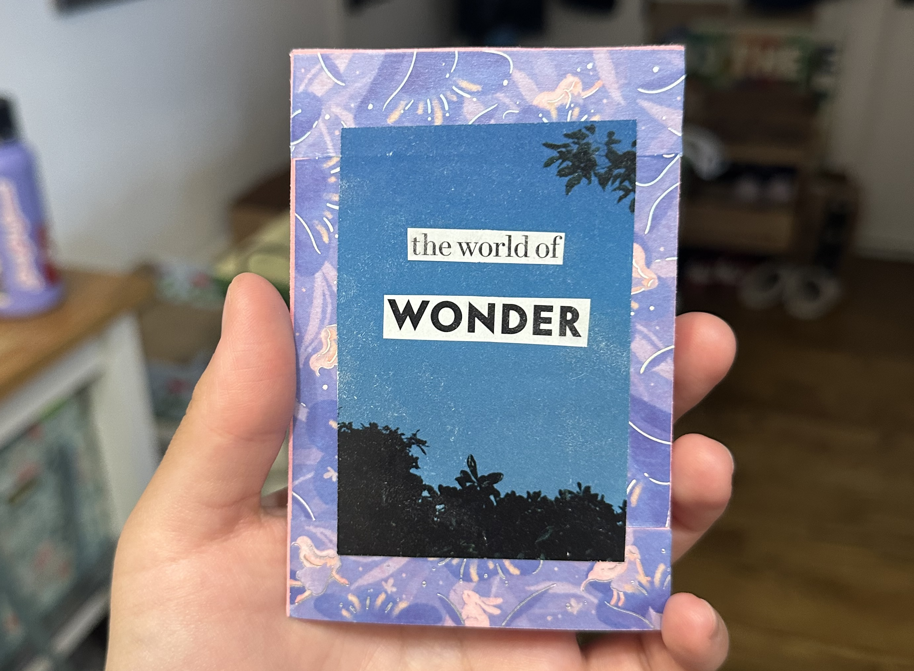
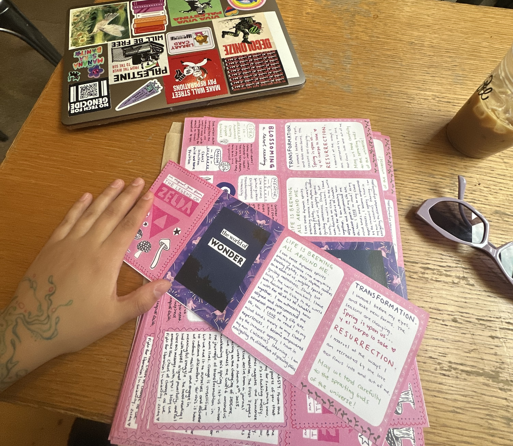
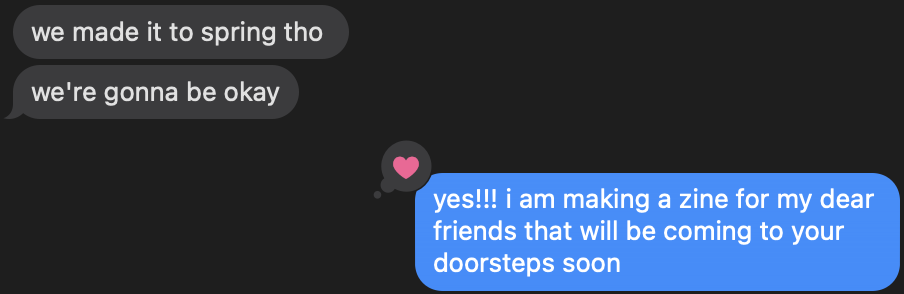
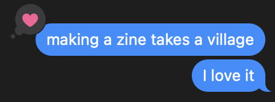

the idea for this zine came from talking to my dear roommates and friends about the weird energy that's been taking over... the energy of SPRING!
i've been taking so many pictures of the signs of spring all around me. curious what my phone camera roll looks like? check out ⇾ here ⇽ for some of my favorite pictures of this season!
although i loved making copies of this zine to share, i was pretty bummed about how the physicality of the zine is flattened with a scan. one thing about me that doesn't get across here is that i LOVE a glue stick! a lot of my writing, drawings, and randomly cut-out materials were glued onto pink construction paper to give birth to this zine. i hope this site helps bring the zine back to life again!

i cut up an old vanity fair magazine that got sent to my apartment, meant for the old tenants. i was mainly looking for some nature-y materials to cut up, and i really liked the dusky blue sky with trees peering through.
i hadn't used this washi tape before. i was super drawn to the dreamy, angelic vibe. it's interesting, since i scanned the original, physical copy of this zine, the colors are actually darker on the copies than they're supposed to be...
there is something about reading that feels a lot like spring. to read is to nourish the mind with ideas, paving the way for our liberation. much of what i've been reading has been for school.
one of the most transformative readings of this season for me is Pedagogy of the Oppressed by Paulo Freire... PLEASE READ IT IF YOU CAN! i learned so much from Freire's writing about re-thinking education, organizing, and liberatory struggle.
a couple other reads I recommend to you, which have moved me as much as the friends who recommended them have:
- Hijab Butch Blues by Lamya H
- North Woods by Daniel Mason
- Displacement by Kiku Hughes

"es viernes y el cuerpo lo sabe" translates in english to "it's friday and the body knows it"... it represents the body's desire to be outside and having fun. in wondering where the meme phrase came from, i found it's unexpected origins in a youtube video posted by an argentinian ex-president.
i find little prayers i've written to myself all throughout my journal, grounding words of faith that, although all is at it is... all can be what we dream for it to be. being an organizer, and someone who generally cares a lot about people and the world, my spirituality has became an important source of strength and resiliency.

the tarot deck from this reading is called "tarot for all ages" ... it's one of my favorite decks that helps me gently reflect and find messages that life leaves for me (and us)

it's wild how grounding a tarot reading ends up being for me. maybe tarot isn't your thing, but i hope you have something that helps you slow down and redirect as needed.

this tarot deck is BEAUTIFUL! these are the cards i pulled during my reading:


the thing about a zine, is that space is confined... want to read the entire tarot reading from my journal? curious about what the different numbers written represent?
click ⇾ here ⇽ to check it out
WOAH. i literally got chills when i pulled these two cards one after another in the deck.


take a look at the dreamer and the magician... both adorned in celestial garments made of stars themselves. while the dreamer exists among the clouds, the magician sits peacefully in the grass. may we all find a balance between dreaming and making magic in our day-to-day.
a question for you, dear reader:
what are you dreaming of?
how are you making your dreams come true?

i wrote this last section of the zine 6 days after the first part and the tarot reading. i almost got stuck. i had been feeling a bit overwhelmed, i wasn't quite sure how to wrap it up, and i knew i had a lot of stuff to do even after the content of the zine was finished...
click ⇾ here ⇽ to see the writing, scribbles, and to-do list that helped me bring this little dream of mine to reality.
the "ZELDA" and triforce of wisdom stamps were created by me using linoleum rubber blocks that were carved into. the "ZELDA" stamp was actually pretty difficult to make because i had to carve my name backwards, with an xacto knife (rather than a carving tool). still, it was so much fun! highly recommend making your own stamps, you can easily get a linoleum carving kit from your local art store.

snippets of life as I was working on making these zines to share with friends:
  